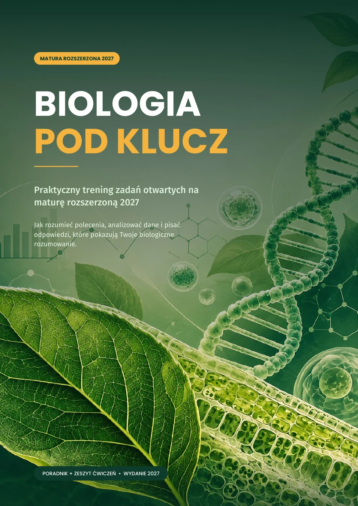

Czasowniki operacyjne
Mapa poleceń i przykłady pokazujące, jak zbudować opis, argument lub wyjaśnienie przyczynowo-skutkowe.
MATURA ROZSZERZONA 2027
Naucz się pisać precyzyjne odpowiedzi na maturze z biologii.
Poradnik i zeszyt ćwiczeń dla maturzystów. Przećwicz czytanie poleceń, analizę danych i wyjaśnianie mechanizmów w zadaniach otwartych.

DLA KOGO
Ten e-book przyda Ci się, jeśli przygotowujesz się do matury rozszerzonej i po rozwiązaniu arkusza trudno Ci wskazać, czego zabrakło w Twoich odpowiedziach.
W jednym miejscu masz przykłady, zadania i sposób pracy z własnymi błędami. Spróbuj odpowiedzieć samodzielnie, sprawdź kryteria, popraw zdanie i wróć do zadania po kilku dniach.
ZAWARTOŚĆ E-BOOKA
31 krótkich rozdziałów. Zacznij od rodzaju zadań, który sprawia Ci największą trudność.
Mapa poleceń i przykłady pokazujące, jak zbudować opis, argument lub wyjaśnienie przyczynowo-skutkowe.
Odczytywanie osi i jednostek, rozpoznawanie zmiennych i próby kontrolnej oraz formułowanie wniosków w granicach danych.
Krótka, kompletna odpowiedź, porównania i pułapki terminologiczne z genetyki, metabolizmu i fizjologii.
Autorskie zadania otwarte, przykładowe rozwiązania z omówieniem oraz miniarkusz oparty na danych o kiełkowaniu nasion.
Arkusze do analizy zadania, wykresu i doświadczenia, rejestr błędów oraz lista kontrolna do sprawdzania odpowiedzi.
Plan startowy na 7 dni, strategia ostatnich 30 dni i proste sposoby śledzenia błędów, które wracają w kolejnych arkuszach.
PODGLĄD PUBLIKACJI
Otwórz wybraną stronę, żeby zobaczyć układ i poziom ćwiczeń.
PORADNIK I ZESZYT ĆWICZEŃ
Praktyczny trening zadań otwartych na maturę rozszerzoną 2027.
39,99 zł
E-book w formacie PDF. Zakup obsługuje Naffy.
Kup terazFAQ
To 34-stronicowy plik PDF w formacie A4, napisany po polsku.
Zakup obsługuje Naffy. Informacji o odbiorze pliku PDF szukaj w potwierdzeniu zamówienia.
Tak. Wystarczy przeglądarka lub aplikacja obsługująca PDF. Strony mają układ A4, więc na małym ekranie może się przydać powiększenie.
Tak, jeśli zaczynasz trening zadań otwartych i uczysz się już biologii. Przykłady pomagają przejść od polecenia do odpowiedzi. Wiedzę z poszczególnych działów uzupełniaj z podręcznikiem i oficjalnymi materiałami egzaminacyjnymi.
Publikacja zawiera autorskie zadania treningowe i przykładowe odpowiedzi. Do oceniania oficjalnych arkuszy korzystaj z aktualnych zasad CKE dla swojej formuły egzaminu.